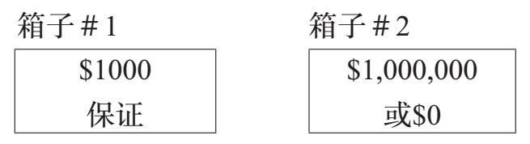
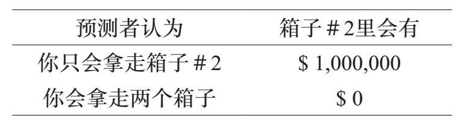
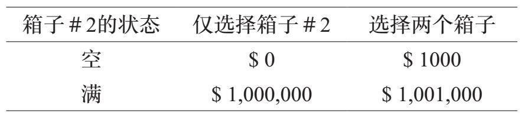
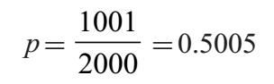

人类的行为是可以预测的。事实上，从经济学到文化人类学的许多社会科学都依赖于现实中的人类活动模式，并能够预测人类的行为（尽管具有不同程度的确定性）。
在本章中，我们介绍纽科姆悖论，它把人类行为的预测变成了一个令人费解的悖论。
这个难题是由威廉·纽科姆（William Newcomb）设想的，首次出现于罗伯特·诺齐克（Robert Nozick）的一篇学术文章中。得益于马丁·加德纳（Martin Gardner）在《科学美国人》（Scientific American）的常设专栏，纽科姆悖论获得了更多的关注。
纽科姆悖论是一个涉及两个角色的游戏：预测者和选择者。在这个游戏中，选择者有两个涉及赢钱的选项。然而，在做出决定之前，预测者要猜测选择者的行为。为了让选择更加个性化，请读者想象一下自己正在扮演选择者的角色。
想象一下，在你面前有两个箱子，箱子＃1和箱子＃2。这些箱子是不透明的，所以你不知道里面有什么。不过，我们保证箱子＃1里有1000美元。对于箱子＃2来说，情况不同，它里面可能有100万美元，也可能是空的。情况如下所示：

稍后我们将解释它在什么情况下是空的，什么时候里面有100万美元。首先，我们让你选择。轮到你的时候，你可以选择做出下面任何一个举动：
●拿走两个箱子。
●只拿走箱子＃2。
而当我们说“拿走箱子”的时候，我们的意思当然是说你拿到了这笔钱。
然而，选择者并不是一开始就做决定。在做出决定之前，预测者试图弄清楚你要做什么。我们设想预测者是一位极具天赋的心理学家，多年来一直默默地观察你，可以远程测量你的心率和排汗量，根据所有这些输入，可以很好地预测你的行为。我们应该先说明，一般情况下预测者并非绝对可靠，因为这不现实。不过现在，让我们说预测者很靠谱，我们的意思是，他的预测的正确率为95%。
现在让我们来解释一下这些箱子是如何装入现金的。如所承诺的那样，箱子＃1包含1000美元。箱子#2里的钱取决于预测者对你行为的预测。如果预测者认为你将拿走两个箱子（这是你
或许你认为95%的准确度过高了。没关系，稍后我们会将准确度降低到51%，这不会影响结果。所以，现在请接受95%这个准确度。
还有一个技术规则，我们稍后会做解释。
的权利），那么箱子＃2是空的。但是如果预测者认为你只会拿走第二个箱子，那么这个箱子里就塞满了100万美元。在表格中，预测者与箱子里的钱之间的联系如下：

让我们重新梳理一下。
1. 预测者进行预测：
●如果预测者认为选择者（你）将拿走箱子＃2，那么那个箱子里会有100万美元。
●但是，如果预测者认为选择者将拿走两个箱子，则箱子＃2里是空的。
2. 现在轮到选择者了。你可以做出以下一种选择：
●仅拿走箱子＃2。
●拿走两个箱子。
无论哪种情况，你都可以在你选的箱子里拿到钱！
以下是我们想要分析的问题：
选择者应该怎么做才能获得最多的钱？
我们需要从一个表面看似乎是相同的问题来辨别这个问题：在这种情况下你会做什么？我们可以想象人们用以下方式回答：
●我只会拿第二个箱子，我不想显得贪婪。
●我会拿两个箱子，那样的话我至少我会拿到一些钱。
这些都是合理的想法，但都没能回答我们所问的问题。它们不是（也并不试图成为）获得尽可能多的钱的策略。但是，这是我们正在努力解决的问题：你应该怎么做才能获得最多的钱？
这里还有一个答案，因为这也是一个合理的想法，所以我们将对规则进行最后一点细微的变更，使下面这个答案变得不再切实可行。
●我会抛硬币来决定。
这种做法会形成一点阻挠，因为预测者无法预料抛硬币的结果。因此，我们稍微修改游戏，规定必须是自己的决定。你不能让其他人为你选择，不能抛硬币或随机抽取一张牌，或者其他任何事情，只能依靠自己做决定。
归根到底：你应该做出什么样的选择才能从这个游戏中获得最多的钱？
好消息是，这个问题有正确的答案。坏消息是，答案不唯一。让我们看一下其中的缘由。
毫无疑问，拿走两个箱子要比仅拿走箱子＃2好，至少能获得1000美元。记住：要由预测者先进行预测。虽然他或她几乎总是正确的，但是你不知道预测者做了什么。箱子＃2里或者有或者没有100万美元。如果你只拿第二个箱子，你可能会拿到也可能拿不到钱。但是，如果你拿走两个箱子，除了箱子＃2里的随机金额，还会有额外的1000美元。毫无疑问，后者能得到更多的钱。
如果你不想要额外的1000美元，没关系。把它捐赠给慈善机构！只是不要把它留在桌子上。
以下方式根据箱子＃2里是否有钱显示了你所做选择的结果。

现在非常清楚。不管预测者怎么想或者做什么，最好的选择永远是把两个箱子都拿走。
你在等着玩这个游戏。一些朋友已经玩过了，做出了他们的选择。他们中的一些人注意到了上面提到的可靠的逻辑，并拿走了两个箱子。即使面对无可辩驳的推理，另外还有一些人决定只拿走箱子#2。结果会是什么？
合乎逻辑的理性玩家有1000美元的额外收入，但那些无视理性的人现在是百万富翁！虽然预测者也曾经猜错过，但是对于之前的其他玩家来说，预测是准确的。
现在轮到你了。
如果你同意前一节中的推理，你会拿走两个箱子。毕竟，你有什么理由不要额外的1000美元呢？如果你这样做的话，预测者很可能会预测到（因为你就是这样的人），而没有在箱子＃2里面放钱。太糟糕了，虽然你有一个非常好的安慰奖（1000美元），但没能成为百万富翁。
另一方面，如果你内心的活动是：预测者真的很准。我已经决定拿走箱子#2，然后有充分的理由希望预测者做出同样的预测。事实上，如果这是你做出的决定，你很可能会瞬间变得更加富有！
换句话说，只选择拿走箱子＃2的策略的玩家比“理性的”拿走两个箱子的玩家能获得更多的钱。证据是压倒性的：仅拿走箱子＃2更有可能获得巨大的回报，而拿走两个箱子更有可能只获得很少的奖金。
只拿走箱子＃2才是获得最大奖励的最佳方式！
我们可以用期望值的语言来重写这个论点。这是一个简单的方法，用来计算不同的策略（只拿走箱子＃2和拿走两个箱子）所得到的平均回报。我们稍后会回到预测者–选择者的游戏，但为了简单起见，我们设想一个“三位数”抽奖游戏。
在“三位数”抽奖游戏中，玩家每人购买1美元的彩票。消费者为每张彩票选择一个三位数的号码。当晚晚些时候会采用随机抽取的方式产生一个三位数。彩票上有同样三位数的人可以获得500美元的现金奖励。
我们的问题是：一张彩票的预期收益是多少？
一个明智的、通俗的答案是：零。我们正确猜出中奖号码的概率是千分之一，即0.1%。几乎总是（但不是绝对）输家。
但是当数学家询问预期收益时，他们的意思是：一张彩票的平均收益是多少？以下是计算过程。
如果收益为0的概率为0.999，收益为500美元的概率为0.001。因此，一张彩票的平均收益是
$0×0.999+$500×0.001=$0.50
一张“三位数”彩票带来的价值平均只有50美分。
还有另一种思考方法，也能得到同样的结果。试想一下，彩票机构出售100万张“三位数”彩票。由于每张彩票售1美元，他们收取了100万美元。他们支出了多少钱？
当中奖号码被选中时，我们应该预见获奖者是千分之一。这意味着将有大约1000张中奖彩票，并且该机构每人支付500美元。总支出是50万美元。按每张彩票计算，每张彩票的收益为50美分。
让我们把这个分析应用到纽科姆游戏中。作为选择者，我们可以只拿走箱子＃2或者拿走两个箱子。每种情况下的预期收益是多少？
●如果我们只拿走箱子＃2，预测者的正确预测率为95%（并把100万美元放进箱子），错误率为5%（让箱子空着）。因此，预期的收益是
$1,000,000×0.95+$0×0.05=$950,000
●如果我们拿走两个箱子，同样预测者的正确预测率为95%（让箱子#2空着），错误率为5%（把一百万美元放进箱子#2）。在这两种情况下，选择者都会得到箱子#1里的1000美元。预期收益是
$1000×0.95+$1,001,000×0.05=$51,000
现在非常清楚。获得最大奖励的最佳方式是只拿走箱子＃2。
我们现在得出了两个必然的结论。一、拿两个箱子更好（为什么把钱留在桌子上？）。二、只拿走箱子＃2更好（如果你这样做，你更有可能成为百万富翁）。这怎么可能呢？二者不可能都是对的！
矛盾产生了，我们以前处理过矛盾。在第一章中，我们创建了一个数字N，它既（a）可以被一个质数整除，又（b）不能被一个质数整除。当然，这是不可能的。是错误的假设导致我们推断出了一个矛盾。事实上，我们故意假设质数是有限多的，而这种假设使我们得出了一个不可能的结论。由于这个结论是不可能的，因此这个假设是错误的。如果质数的数量是有限的，那会导致彻头彻尾的荒谬。因此质数是无限多的。
对于纽科姆悖论，我们没有明确地做出任何假设，但实际上有两个假设。
首先，有一个选择者。选择者有可能做出这个决定吗？有人可能会质疑人类是否有自由的意志。事实上，对这个古老的哲学问题给出明确的答案或许是不可能的（我们也不会在这里尝试）。
顺便说一句：你具备自由的意志。我不清楚为什么你会认为自己不具备！
其次，有一个预测者。预测者能否准确预测人类的行为？非常清楚的是，人类的行为总和是可以被精准预测的。但在这场游戏中，预测者试图确定个人的行为，这是一种截然不同的情况。95%的准确率似乎过高了。
现在有趣的部分来了：当我们说预测者的准确率为51%时，矛盾并不会消失！“不要把钱留在桌上”的论点仍然有效。以下是预期值的论点：
●如果只拿走箱子＃2，你的预期回报是$1,000,000×0.51+$0×0.49=$510,000
●如果你拿走两个箱子，你的预期回报是$1000×0.51+$1.00001×0.49=$491,000
需要你解答的是：找到令矛盾消失的准确程度。也就是说，预测者预测的准确率为多少时两种选择（只拿走箱子#2和拿走两个箱子）的预期回报是相同的？答案见[1]。
即使预测者只有51%的准确率，你还是最好只拿箱子＃2！因为篇幅的原因，所以无法对这个论点心理上的吸引力进行充分说明，但结果仍然表明，选择箱子＃2优于拿走两个箱子。
这里又包含两个隐藏的假设：
●选择者有自由意志。
●预测者的准确率达到51%（或更好）。
通过改变两个奖金（1000美元和100万美元），我们可以将所需的水平调整为接近50%的值。
这表明自由意志和即便如此低的预测水平也是不相容的。
让我们想象由一个计算机程序扮演纽科姆游戏中的选择者角色，而我们（人类）扮演预测者的角色。根据游戏规则，不允许通过抛硬币来做出决定，这意味着扮演选择者的电脑程序不允许进行随机选择。
事实上，大多数似乎包含随机性的计算机程序都使用伪随机数生成器。这是一些似乎能产生随机值的计算机代码，但事实上，它遵循确定性算法。参见第21章，了解确定性过程如何产生不可预知的结果。
在短时间内，计算机将会在只选择箱子＃2和拿走两个箱子之间做出选择。它会做什么？[g]
事实证明，我们可以很容易地预测电脑的决定。我们需要做的是获得电脑程序的副本，在另一台电脑上运行，观察程序的运行。这将给出一个近乎完美的预测（除非在我们加载程序时出现问题或电脑运行出现某种故障）。然后，在实际玩游戏时，我们可以见证我们的预测成真。几乎没有例外的是，选择两个箱子的程序只能获得1000美元，而只选择箱子＃2的程序能获得100万美元。
如果我们被要求设计一个计算机程序来玩这个游戏，我们的决定要非常清晰易懂。以下是程序：
●输入（“我只拿箱子＃2”）
当程序运行，我们的电脑获得了100万美元，我们很高兴。
没有理由做出拿走两个箱子的决定。因为计算机的行为是事先可知的（因为它纯粹是机械的），所以拿走两个箱子只能赚1000美元。
当人类扮演选择者的角色时为什么会产生矛盾，而电脑就不会呢？纽科姆悖论表明，如果我们有自由意志，那么预测者就不能准确地预测我们的行为。
[1][g]问题的答案：设p是预测者的正确预测率，预期回报如下
只拿箱子＃2 →1000000p
拿走两个箱子→1000p+1001000（1–p）
我们希望求出使这些数值结果相等的p。也就是说，解方程式
1000000p=1000p+1001000（1–p）
用一点代数知识得

所以临界值为50.05%。